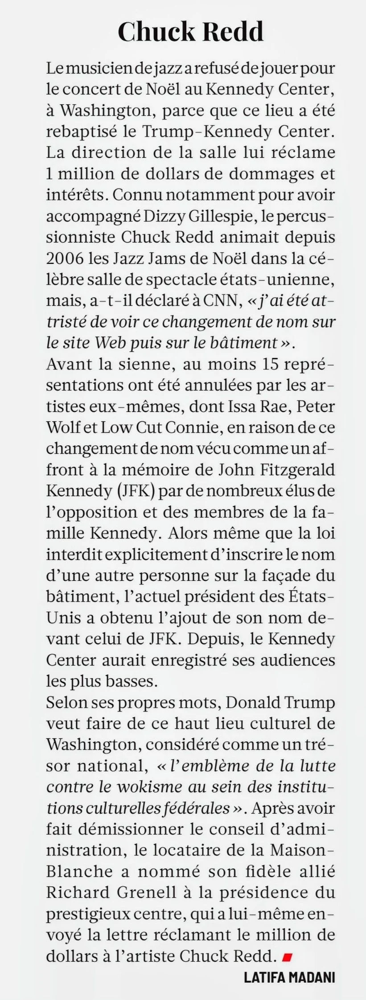

Revue de presse
Chuck Redd, « L’Homme du jour » de L’Humanité
Date indiquée par Facebook · 29 décembre 2025
Repères éditoriaux
Dans sa rubrique « L’Homme du jour », L’Humanité revient sur la décision du musicien Chuck Redd d’annuler un concert au Kennedy Center. Le journal situe ce geste dans la contestation de la place prise par Donald Trump dans cette institution culturelle.
Texte conservé avec la publication
L'Homme du jour dans l'Humanité
#chuckredd
L'Homme du jour dans @[100064860845478:2048:l'Humanité]
#chuckredd

Sources
Archive rouge · export Facebook · AR-0002-FB-00921
À lire aussi · Pass culture, non à la punition collective ! · Le lien d’origine